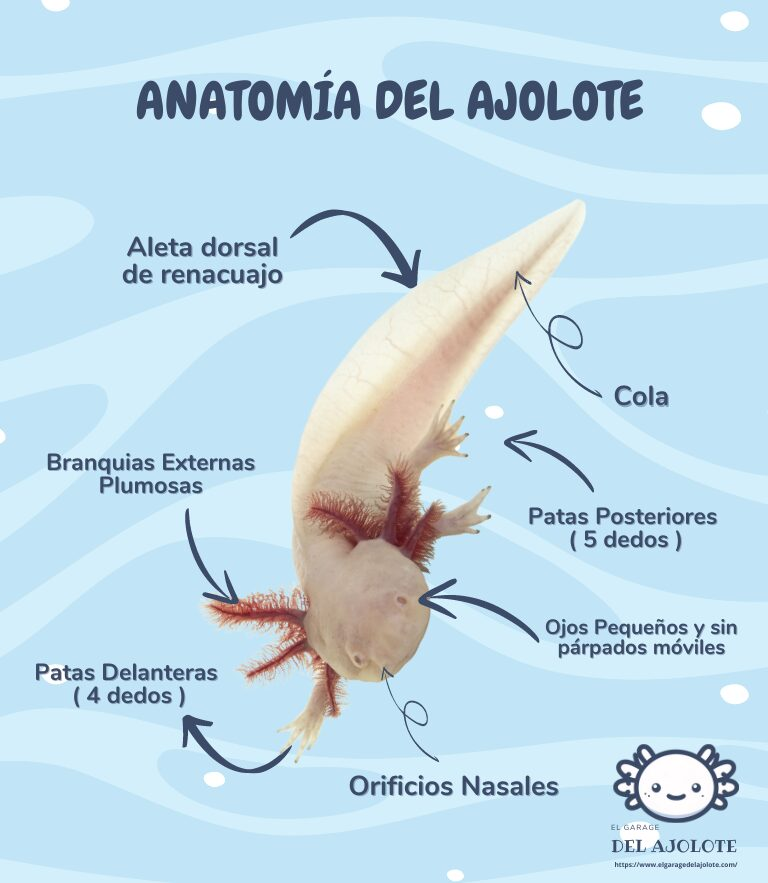

El ajolote es un anfibio acuático originario de México.
Destaca porque conserva su forma de larva durante toda su
vida adulta. Mide entre quince y treinta centímetros de largo.
Tiene un cuerpo alargado, piel suave y una cola diseñada para nadar.
Su rasgo más famoso son tres pares de branquias con forma de plumas a los
lados de la cabeza, las cuales usa para respirar bajo el agua. En la naturaleza
suele ser de color negro o marrón oscuro. Las versiones blancas, rosadas o doradas
son comunes en cautiverio. Además, posee una asombrosa capacidad para regenerar sus
extremidades, cola y órganos internos si estos sufren algún daño. Es un animal carnívoro
que se alimenta de insectos, gusanos y pequeños peces. Su hábitat natural son los canales
de Xochimilco, aunque hoy en día se encuentra en grave peligro de extinción debido a la contaminación del agua.